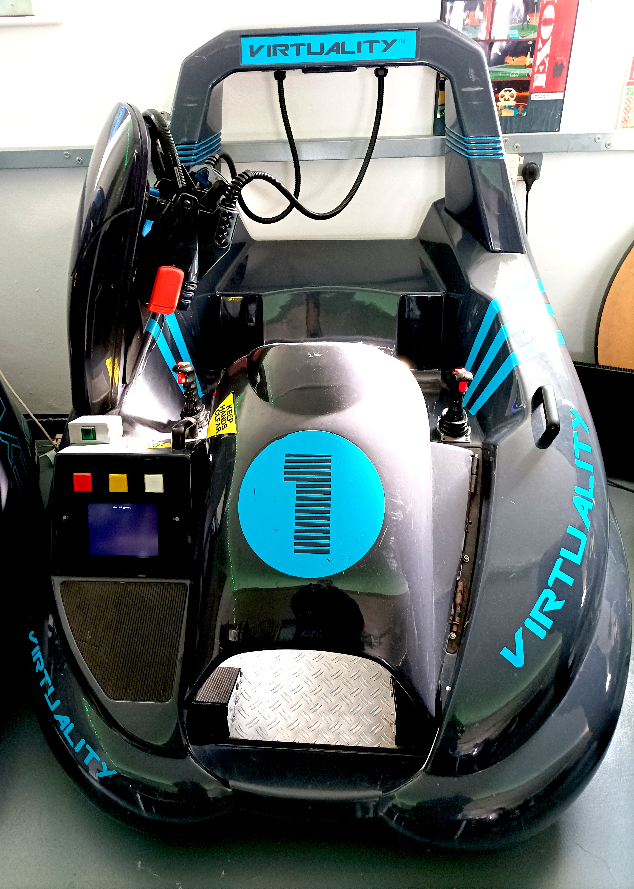
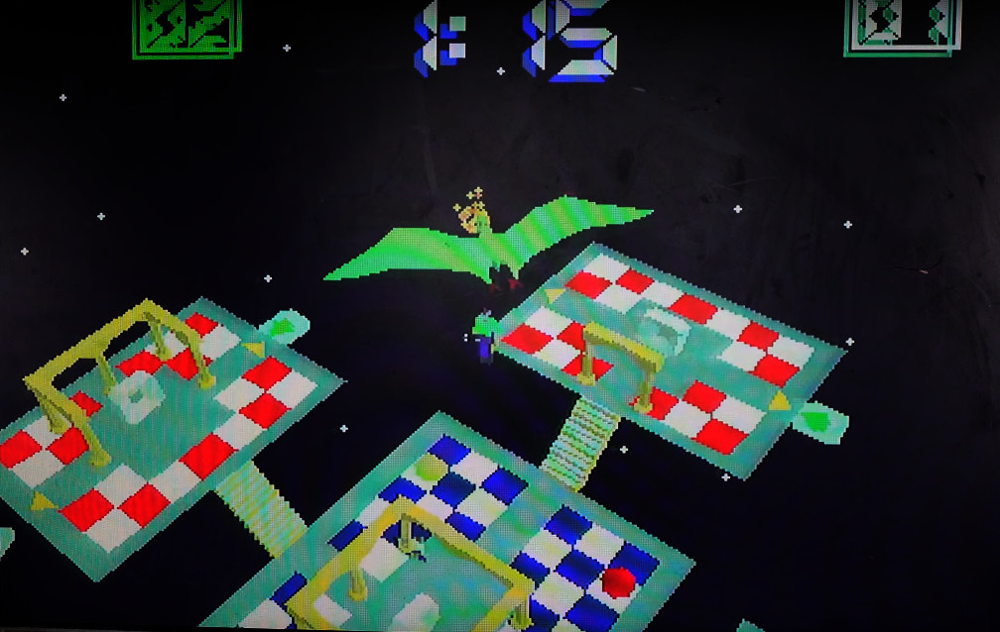

Virtuality
Networked VR in an arcade pod

Overview
Virtuality was the first mass-market, networked virtual-reality arcade system. Produced by Virtuality Group — originally founded as W Industries in Leicester, England, in October 1987 — the system put players inside a stereoscopic headset (branded the “Visette”) with 6-degrees-of-freedom magnetic tracking and a handheld “space joystick.” Players stood in a ring or sat in a pod and competed in real-time 3D games such as Dactyl Nightmare.
Deep dive
Dr. Jonathan Waldern developed early VR prototypes at Leicester Polytechnic/Loughborough University, including a 1986 stereoscopic “Roaming Caterpillar” system. W Industries refined several prototype pods before the fifth prototype became the basis of the commercial Virtuality 1000SU, launched at the Computer Graphics ’90 exhibition at Alexandra Palace, London, in November 1990. The 1000 series was built around an Amiga 3000 with 4 MB RAM and a pair of Texas Instruments TMS34020-based graphics accelerators (one per eye). The Visette headset used two Panasonic LCD screens (372×250 per eye) derived from a camcorder accessory; because the screens were too heavy to mount directly in front of the eyes, they were placed at the sides and reflected into the lenses with mirrors. The stand-up 1000CS used a Polhemus magnetic tracking ring at waist height to track both the headset and the space joystick; the sit-down 1000SD used a cheaper Ascension tracker with a shorter range, acceptable because the player remained seated. The arcade 1000CS shipped in 1991 with games including Dactyl Nightmare (a multiplayer arena shooter with a pterodactyl that snatched players), Grid Busters, Hero, and Legend Quest. The SD unit offered Battlesphere, Exorex, Total Destruction, VTOL, and Flying Aces. About 1,200 Virtuality arcade machines were in use before the company filed for bankruptcy in 1997.
The “CS” suffix stood for “Cyberspace,” pure marketing for the early-1990s VR hype. Dactyl Nightmare is sometimes cited as one of the first commercial networked first-person deathmatch games, predating Doom. * The headset mirrors were a literal workaround for overweight LCDs.
Team & pioneers
- Jonathan Waldern Founder of W-Industries, later Virtuality Group plc; drove the design of the arcade VR pods.
- W-Industries / Virtuality Group UK company that produced networked, stand-up VR arcade systems using Amiga 3000s and magnetic tracking.
- Commodore / Amiga The Amiga 3000 formed the graphics and compute heart of early Virtuality 1000SD and 1000CS systems.
Media


Sources
- Wikipedia, “Virtuality (product)”
- Virtual Reality Society, “Virtuality – A New Reality of Promise, Two Decades Too Soon”
- Heise Online, “Virtual reality in the 90s: how the first VR hype started in arcades”
- Time Extension, “Virtuality, The 1990s Pioneer That Sold The World On VR”
- V-Rtifacts, “Virtuality History” (archived)
- YouTube, “VIRTUALITY DACTYL NIGHTMARE REVIEW! Experience VR From 1990 Right Now!”
- YouTube, “Playing Dactyl Nightmare on Real 1990s VR Hardware!”